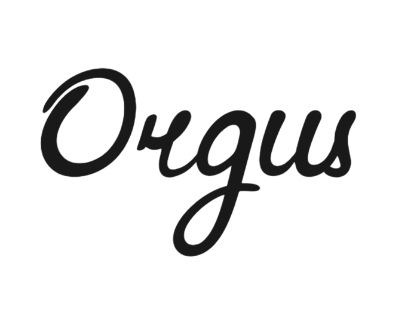
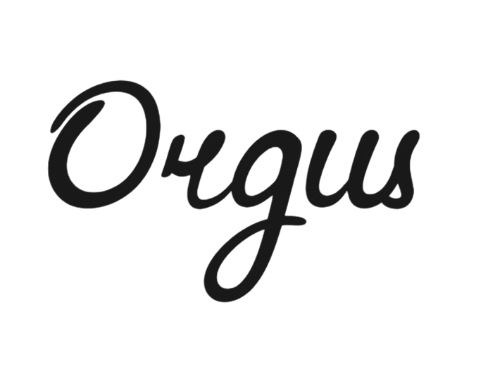

Ручное изготовление электронных органов под заказ
Живое дыхание органа — у вас дома.
Духовой оргáн — это самый грандиозный, самый сложный и один из самых впечатляющих музыкальных инструментов, когда-либо созданных человеком. Он состоит из сотен и даже тысяч труб, компрессоров, системы воздухораспределения и величественной кафедры — пульта управления, где рождается музыка.
Исторически оргáны возводились в соборах, храмах и концертных залах. И это неудивительно — масштаб инструмента просто не позволяет разместить его где-то ещё. Одни только трубы могут достигать 20 метров в высоту и 5 метров в диаметре, а само помещение становится частью его звучания, продолжением резонанса, живым телом акустики.
Но с величием приходит и ограниченность. Такой инструмент:
- невозможно переместить;
- нельзя использовать в любое удобное время;
- невозможно сделать личным и индивидуальным — орган всегда принадлежал пространству, но не исполнителю.
Сейчас это изменилось.
Благодаря современным технологиям, виртуальные копии настоящих органов — в сочетании с высококачественными MIDI-консолями — позволяют вам прикоснуться к величию инструмента в собственном доме, студии или даже в дороге.
Мы изготавливаем MIDI-консоли вручную, под заказ, с учетом ваших пожеланий и потребностей. Это не фабричное изделие, а уникальный музыкальный инструмент, в котором каждая деталь продумана и сделана с душой. От механики клавиатур до финишной отделки — всё настраивается индивидуально.
Что делает наши консоли особенными:
- Подлинное звучание — каждое нажатие оживляет запись настоящей органной трубы, отцифрованной с исторического инструмента. Вы слышите живой духовой оргáн, а не его электронную имитацию.
- Индивидуальный дизайн — вы сами выбираете размеры, материалы, отделку, форму. Хотите компактную консоль для дома или мобильную версию, которая помещается в багажник? Или роскошный фасад, вписывающийся в классический интерьер? Мы сделаем это.
- Максимальная функциональность — полная совместимость с ведущими программами виртуальных органов, расширяемость, надёжность и комфорт исполнения.
Электронный орган, который звучит как настоящий.
И принадлежит только вам.
Настоящий духовой орган — это сложно, дорого и громоздко. Но виртуальный инструмент на основе настоящих записей — это разумная альтернатива, не уступающая в качестве звучания и многократно превосходящая в удобстве.
В современном мире мобильность, доступность и индивидуальность становятся не роскошью, а необходимостью. Мы создаём инструменты, которые вдохновляют.
Пусть ваш орган зазвучит — где бы вы ни находились!
Все инструменты изготавливаются вручную в городе Нижний Новгород — одном из исторических центров органного искусства России. Город с богатыми музыкальными традициями, где переплетаются современные технологии и многовековой опыт создания музыкальных инструментов.
Изготовление электронных MIDI-органов: от теории к практике
Что такое MIDI?
MIDI (Musical Instrument Digital Interface) — это стандарт цифровой передачи музыкальных данных, разработанный в 1980-х годах. В отличие от аудиосигнала, MIDI не передаёт звук напрямую, а содержит команды: какая нота нажата, с какой силой, как долго она звучит и т. д. Это позволяет управлять виртуальными инструментами, синтезаторами и даже целыми оркестрами с одного контроллера.
MIDI-орган — это электронный орган, который вместо традиционных труб или цифровых сэмплов использует MIDI-сообщения для воспроизведения звука через компьютер или внешний синтезатор.
Как создают MIDI-органы?
Конструкция клавиатур
Используются механические клавиши (например, от старых органов или фортепиано) либо специализированные MID-контроллеры.
Важно обеспечить реалистичную механику, особенно для педальной клавиатуры.
Датчики (оптические, резистивные или магнитные датчики холла) фиксируют нажатия и преобразуют их в MIDI-сигналы.
Электроника
Микроконтроллеры собственной разработки обрабатывают сигналы с клавиш и педали.
Для передачи данных используется MIDI-интерфейс USB для простоты подключения.
Программное обеспечение
Виртуальные органы (Hauptwerk, GrandOrgue) получают MIDI-данные и воспроизводят сэмплы реальных органов.
Возможна настройка тембров, темпераций, строя, акустики и даже моделирование работы конкретных соборных органов с возможностью выбора разположения исполнителя относительно органа.
Корпус и акустика
Безусловно, я могу изготовить корпус любого формата: аутентичный с деревянными трубами (для декора), различные компактные решения с мультимедийными колонками.
Hauptwerk — вершина виртуальных органов
Hauptwerk — это профессиональное ПО для эмуляции органов, использующее сэмплы реальных инструментов с высокой детализацией. Поддерживается:
- Многоканальный звук для акустического пространства.
- Работу с педалями швеллера, вальцшвеллера и регистрами.
- Подключение нескольких MIDI-консолей и педальных блоков.
С Hauptwerk даже домашний MIDI-орган может звучать как орган собора Нотр-Дам или Сикстинской капеллы.
Заключение
Создание MIDI-органа — это сочетание инженерного мастерства и музыкального творчества. Такой инструмент открывает доступ к бесконечной библиотеке звуков и возможностям настройки, оставаясь при этом более доступным, чем традиционные органы. Благодаря технологиям вроде Hauptwerk, каждый может прикоснуться к миру органной музыки, не выходя из дома.